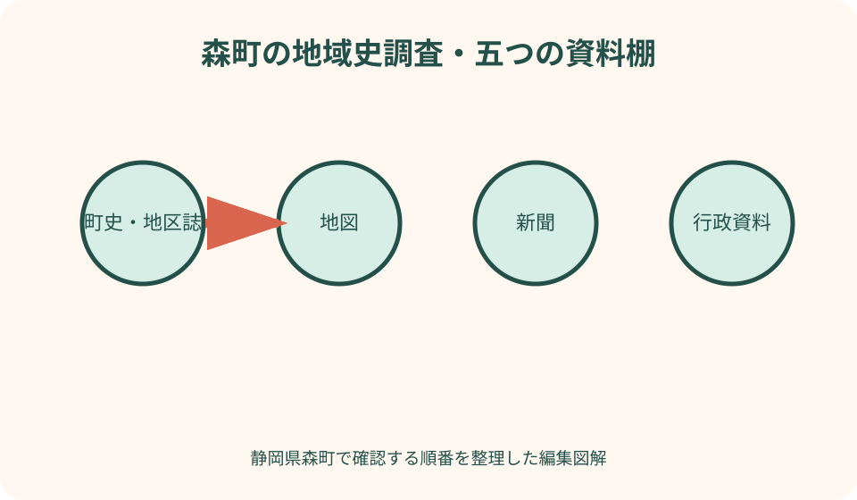
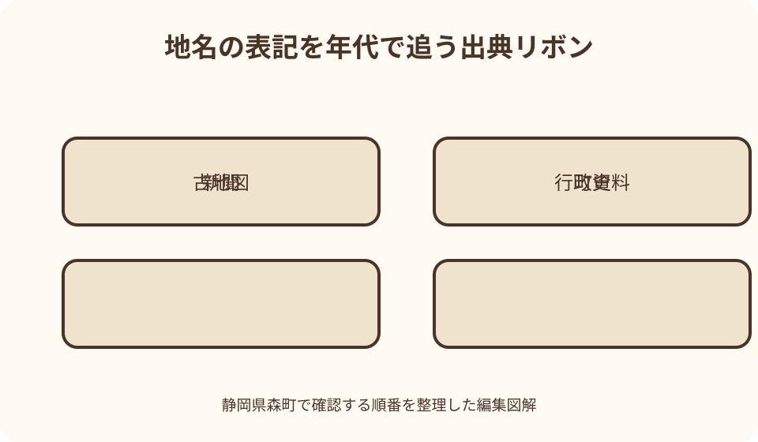

学校・就学・家庭記録｜最終確認 2026-08-10
静岡県森町の森町立図書館で郷土資料を探す｜地名・家・地域史の調べ方
地域史の調査は、検索で見つけた一文をつなぐだけでは進みません。同じ地名に表記違いがあり、町史、地図、新聞、行政資料はそれぞれ作成目的も時点も違います。家や人物の情報には公開できないものもあります。本稿では、森町立図書館を入口に、問いを小さくし、目録と資料を往復し、見つからなかった事実まで記録する調べ方を案内します。

編集イラスト結論：地域史調査は答え探しより、問いと根拠を整える作業
森町の地名や家の歴史を調べるとき、最初から一つの正解を探すと、似た名前や伝承を無理につなぎやすくなります。まず対象、年代、場所、知りたい理由を一文にします。「○○地区の呼び名が昭和期の地図でどう表記されたか」のように、資料で確認できる大きさへ絞ります。
郷土資料は地域に近い情報を含みますが、書かれた内容がすべて現在も有効とは限りません。執筆時点、典拠、聞き取り、編集方針を確認し、行政上の現住所、通称、旧村名、字名を区別します。複数資料が違う場合は、どちらかを消さず相違として残します。
図書館の目録に出ない事実が、資料に存在しないとは限りません。冊子の一章、雑誌の記事、新聞、地図、行政文書に含まれる場合があります。反対に、インターネット検索で同じ説明が繰り返されても、元資料が一つなら独立した裏付けが増えたことにはなりません。
本稿の確認日は2026年8月10日です。森町立図書館の開館、貸出、検索、複写、所蔵、資料館の公開状況は変わり得ます。訪問前に町公式の施設案内と図書館の最新案内を確認し、閲覧・撮影・複写ができると決めつけないでください。
森町立図書館を使う前に、施設案内と利用条件を確認する
森町公式の図書館施設案内には、所在地、開館時間、休館日、利用できる人、貸出の原則、蔵書検索への入口が示されています。館内閲覧と館外貸出は条件が同じではありません。遠方から訪れる場合は、特別整理日や臨時変更も最新ページで確かめます。
郷土資料は一般書と同じ場所や貸出条件とは限りません。検索で所在が分からない、書庫資料と表示される、複写したい場合は、来館前に図書館へ相談します。利用可能かを記事で保証せず、資料名、調査目的、希望日を伝えます。
館内でメモする道具は、鉛筆、ノート、資料リストを基本にし、撮影機器やスキャナーの扱いは館の案内へ従います。古い資料へ付箋を貼る、強く開く、ページを押さえ付けることは避けます。資料保存を優先します。
時間を有効に使うには、調べたい問い、既に見た資料、分からない語を一枚にします。「森町の歴史を全部知りたい」では範囲が広いため、地区、年代、対象物を一つずつ示します。司書が答えを保証するのではなく、資料へたどる手掛かりを相談する場です。
問いを小さくする：地名・家・地域史を一度に混ぜない
地名を調べる問いは、読み方、表記、範囲、成立時期、由来のどれかへ分けます。「この字名はいつから公的資料に現れるか」と「なぜこの名になったか」は別の問いです。前者が確認できても、由来まで証明できたことにはなりません。
家を調べる問いは、建物、土地、家名、居住者、事業、系譜を分離します。同じ場所に同じ姓が続いても、所有や血縁の連続を示すとは限りません。登記、戸籍、固定資産、家族資料には利用条件があり、図書館の公開資料だけで個別権利を確定できません。
地域史の問いは、出来事、組織、祭礼、産業、交通、災害など主題を決め、年代幅を置きます。「戦前」「昔」では広すぎる場合があるため、元号と西暦を併記します。資料によって年代区分が違えば、その資料の表現を記録します。
問いの末尾に、何が分かれば一旦終了するかを書きます。例えば、旧地名の表記が二種類確認でき、使われた年代と資料が分かれば第一段階を終える、とします。調査を無限に広げず、未解決は次の問いへ分けます。
地名を探す：現在名、旧名、読み、隣接地を検索語にする
地名は漢字、ひらがな、旧字体、異体字、送り仮名で表記が変わります。現在の表記だけでなく、読み、旧村名、字名、近隣の川・山・寺社を候補語にします。思いついた表記と、資料で実際に見た表記を別欄にします。
検索結果が多すぎるときは、「森町」だけでなく「静岡県周智郡」「遠江」など地域を限定する語を加えます。北海道など他地域の森町と混ざらないよう、発行地、対象地域、本文の地名を確認します。
古地図や行政資料で同じ文字が見つかっても、範囲が現在と同じとは限りません。地図の凡例、縮尺、作成年、改訂、作成主体を記録します。後年の復刻図は、元図の年代と復刻年を両方残します。
地名由来の説明は、言い伝え、編さん物の解説、一次史料上の記載を区別します。「という説が紹介される」と「その由来で確定した」は別です。根拠が示されない説明は、断定せず出典と表現をそのまま記録します。
家と建物を調べる：所在地・建築・所有・暮らしを分ける
古い家を調べる場合は、現在の所在地、旧地名、建物の用途、建築年代、改修・移築、所有、居住の記録を別の欄にします。外観が古いことだけで建築年を推定せず、棟札、図面、町史、文化財資料など確認できる資料を探します。
森町公式の図説森町史には、民家、神社建築、寺院建築、産業、絵図など複数の章があります。町は、この内容が発行時の情報を用いており最新情報と異なる場合があると注意を示しています。現在の所有・用途を同ページだけで確定しません。
家名や屋号は、名字や現所有者と一致するとは限りません。聞き取りで得た呼び名は、誰から、いつ、どの範囲で使われたかを記録し、公開資料の記載と分けます。近隣の人が知っているという理由だけで、個人名や住所を公開しません。
土地や建物の権利、境界、売買に関する判断は郷土史調査とは別です。古地図や町史は背景を知る資料であり、現行の登記や測量を代替しません。権利確認が目的なら、法務局、土地家屋調査士など適切な専門先へ相談します。
郷土資料：町史、地区誌、記念誌、民俗資料を役割で分ける
町史は広い時代と主題を見渡す入口です。索引、目次、参考文献、付表を先に確認し、知りたい項目の前後も読みます。一文だけを切り出すと、時代や地域の限定を落とすことがあります。
地区誌や自治会史は、町史より狭い地域の出来事、地名、行事を収める場合があります。発行部数が少なく、目録上の件名が十分でないこともあります。地区名だけでなく、学校、神社、産業、人物など関連語から探します。
学校・団体・企業の記念誌は、沿革や写真を含む一方、発行目的に沿った選択があります。記載がないことを、出来事がなかった証拠にはしません。執筆者、発行主体、発行年、典拠の有無を記録します。
民俗資料や聞き書きは、暮らしや祭礼の記憶を知る貴重な手掛かりです。語り手の経験時期と場所を尊重し、町全体で同じだったと一般化しません。表現を引用するときは、必要な範囲にし、出典ページを示します。
図説森町史を入口にし、章と年表から次の資料へ進む
森町公式の図説森町史は、自然、古代から近現代、祭礼、生業、民家、文化財まで多数の章へ分かれています。調査の入口として、問いに近い章を一つ選び、本文に出る固有名詞、年代、参考となる語を次の検索語へ移します。
町公式ページは、図説森町史が平成11年2月発行時の情報を使うため、最新情報と異なる場合があると明記しています。現状調査では、掲載内容を起点に、現在の町公式資料、施設案内、文化財関係資料へ進みます。
略年表は出来事の順序をつかむ助けになりますが、各項目の詳細や典拠がすべて示されるとは限りません。年表で年を見つけたら、関連章、行政資料、新聞などへ進み、出来事の場所と範囲を確かめます。
ウェブ版の更新日と、元となる刊行物の発行時点を混ぜません。出典記録には「ウェブページ閲覧日」と「元資料の発行情報」を分けて書きます。ページが更新されても、歴史記述の根拠が自動で新しくなったとは限りません。
目録検索：本の題名と、本の中の記事は別に探す
図書館の蔵書目録は、書名、著者、出版者、件名、分類などから資料を探す入口です。本文中のすべての地名や人名が検索対象になるとは限りません。地名でゼロ件でも、町史や雑誌の一章に記載がある可能性があります。
最初は固有名詞で検索し、次に広い地域名と主題を組み合わせます。「三倉＋祭礼」「天方＋林業」のように二語で試し、結果が少なければ片方を外します。検索式と件数、試した日を残すと、同じ検索の繰り返しを防げます。
雑誌や紀要の記事を探すときは、記事名が分かっていても所蔵検索では雑誌名と巻号が必要になる場合があります。国立国会図書館のリサーチ・ナビも、雑誌・新聞自体と、その中の記事を探す方法が異なることを案内しています。
見つかった資料は請求記号、所在、貸出可否、巻号を記録します。書名だけのリストでは、同名本や版違いを取り違えます。資料が森町立図書館にない場合は、他館所蔵や利用方法について司書へ相談します。
新聞を探す：日付、版、紙名、掲載面をそろえる
新聞は、行事、災害、開通、施設、人物の当時の報道を探す手掛かりです。まず出来事の日付を町史や年表で絞り、前後数日から検索します。記念日記事や回顧記事なら数年・数十年後に掲載されることもあります。
地方紙、全国紙の地方版、ローカル紙は対象地域が異なります。国立国会図書館のリサーチ・ナビには、地方新聞と記事の探し方、所蔵機関を調べる案内があります。新聞名が分からない段階では、地域と年代から候補を探します。
記事を見つけたら、新聞名、発行日、朝夕刊、版、面、見出し、著者表記、閲覧した形態を記録します。同じ日でも版により記事が違う場合があります。データベースの検索結果画面だけでなく、可能なら紙面情報を確認します。
新聞記事は当時の報道であり、後の研究や公的確認と結論が異なる場合があります。記事に書かれた推測、引用、発表を区別し、現在の事実として無条件に採用しません。後日の訂正・続報も探します。
行政資料：作成目的、対象期間、確定・案を区別する
行政資料には、計画、報告書、会議録、統計、広報、文化財資料、地図などがあります。同じ地域を扱っても、作成目的が違います。表紙、目次、発行部署、作成日、対象期間、用語の定義を確認します。
資料名に「案」「素案」「パブリックコメント」とあるものは、確定版と同じではありません。検討過程を知る資料として保存し、実施済みの内容へ置き換えません。後に確定版が出ているか、担当ページで確認します。
森町の文化財保存活用に関する計画案には、歴史文化資産や関連施設、これまでの把握調査に関する情報が含まれます。個別資産の現況、公開、所有を確定する場合は、最新の町公式情報と担当部署へ戻ります。
会議録では、委員の発言、事務局説明、決定、継続審議を分けます。一人の意見を行政の決定として引用しません。ページ番号と発言者の役割を記録し、公開資料にない背景を推測で補いません。
歴史民俗資料館：展示と収蔵資料の役割を図書館と分ける
森町立歴史民俗資料館の町公式案内には、旧郡役所を移築した施設で、農耕具、生活用品、古文書などの展示があること、所在地や開館時間などが示されています。図書館の蔵書と資料館の展示・収蔵は同じではありません。
展示を見る前に、問いに関係する時代と道具をメモします。展示解説は要点を知る入口ですが、資料全体の来歴や関連文書がすべて表示されるとは限りません。撮影や詳細照会は施設の案内に従います。
古文書や民具があると紹介されていても、特定の家や地区の資料が閲覧できると断定しません。保存状態、個人情報、寄託条件、展示替えなどにより利用範囲が異なります。資料名と調査目的を伝えて相談します。
図書館で刊行物の記述を確認し、資料館で物や展示を見た場合は、二つを別の出典として記録します。展示を見た印象から、刊行物に書かれていない年代や使用者を補わないようにします。
聞き取り：記憶を尊重し、公開資料と同じ扱いにしない
地域の人や家族への聞き取りは、暮らしの言葉や場所の感覚を知る手掛かりです。録音や撮影の前に、目的、利用範囲、公開の有無、保存期間を説明し、同意を得ます。話してくれたことが自動的に公開許可になるとは考えません。
記録には、聞いた日、場所、聞き手、語り手の関係、語っている時期を残します。個人名を出せない場合は、本人と相談した範囲で属性を記します。匿名にしても地名や役職の組み合わせで特定される可能性があります。
記憶違いや異なる語りがあっても、すぐに訂正や統一を求めません。「Aさんはこう記憶する」「資料ではこう記載される」と分けます。複数人が同じ話をしても、共通の伝承を聞いた可能性があり、独立した証拠とは限りません。
故人や他の家に関する話には、名誉やプライバシーへの配慮が必要です。刺激的な内容を記事やSNSへ載せる前に、公開の必要性と根拠を見直します。法的判断が必要な場合は専門家へ相談します。
非公開・個人情報：見られない資料がある理由を推測しない
図書館や資料館には、個人情報、権利、保存状態、寄贈・寄託条件などから、利用や複写に制限がある資料も考えられます。閲覧できないことを、隠された事実の証拠として解釈しません。利用条件と代替資料の有無を職員へ尋ねます。
戸籍、住民記録、固定資産、登記などは、それぞれ取得条件と窓口があります。郷土資料の調査目的があるから誰でも入手できるわけではありません。必要性と資格を各機関の公式案内で確認します。
家系図を作る場合、存命者の氏名、生年月日、住所、連絡先を公開版へ入れません。家族内で共有する版と、研究発表用の版を分けます。写真の裏書きに個人情報があれば、画像公開前に確認します。
著作権の保護期間が終わったと考えても、資料の撮影・公開、施設利用、個人情報には別の条件があります。複写できた資料をウェブへ全文掲載できるとは限りません。利用目的に応じて図書館や権利者へ確認します。
出典記録：あとから同じページへ戻れる形にする
図書では、著者・編者、書名、版、出版者、出版年、該当ページ、請求記号、閲覧館、閲覧日を記録します。表紙と奥付の情報が違う場合は、奥付を確認します。シリーズ名や巻号がある資料は省略しません。
ウェブでは、ページ名、発信者、URL、更新日表示、閲覧日を残します。PDFは表紙の資料名、作成部署、発行年月、ページも記録します。検索結果のURLではなく、本文の公式ページやファイルへ戻れるリンクを使います。
新聞では紙名、日付、朝夕刊、版、面、見出し、閲覧媒体を記録します。記事データベースの文書番号があれば併記します。新聞記事を見つけた検索語も残すと、続報や訂正を探しやすくなります。
引用文と自分の要約をノート上で区別します。かぎ括弧だけに頼らず、引用欄へ原文、要約欄へ自分の言葉、疑問欄へ未確認事項を置きます。ページを閉じた後に記憶で引用を作りません。
資料同士が食い違うとき：差を消さずに比較表を作る
年代、読み、場所が資料ごとに違う場合は、資料A、資料B、記載内容、発行年、典拠、対象範囲を横並びにします。新しい資料が必ず正しい、古い資料が一次情報だから必ず正しい、とは決めません。
同じ出来事でも旧暦・新暦、元号・西暦、記念日・実施日が混ざることがあります。換算した場合は元の表記と換算方法を残し、記事本文ではどちらを採用したか説明します。不確かな日付は範囲で示します。
地図の位置が違う場合は、縮尺、測量時点、地名の置き方、行政界の変化を確認します。現地に残る看板だけで旧位置を確定せず、複数資料と担当部署への相談を検討します。私有地へ無断で入って確認しません。
結論が出ないときは「確認できなかった」と書きます。調べた資料と検索語を示せば、次の人が同じところから進めます。読みやすさのために空白を物語で埋めるより、未確認の境界を示す方が地域史に誠実です。
司書へ相談する：問い、確認済み、欲しい資料形態を伝える
司書への相談では、調べたい問いを一文で伝えます。対象地域、年代、人物・建物・祭礼などの主題、調査目的を添えます。答えそのものを求めるだけでなく、どの分類、目録、資料群から探せるかを尋ねます。
既に確認した資料と検索語を示します。「図説森町史の第○章、蔵書検索で○○を試したが、昭和初期の表記が分からない」のように伝えると、重複を避けられます。見た記憶だけでなく資料リストを持参します。
必要な資料形態も説明します。現物を見たい、地図を探したい、新聞の所蔵館を知りたい、参考文献だけ知りたいでは案内が変わります。複写や取り寄せの可否、費用、期間は個別に確認します。
レファレンスは調査代行や事実保証とは限りません。回答に使われた資料と、確認できなかった範囲を記録します。追加の問いが出たら、最初の相談結果を整理して再度相談します。

固有図解案1：森町の地域史調査・五つの資料棚
一つ目の図解は、森町立図書館の閲覧机を中心に、町史・地区誌、地図、新聞、行政資料、聞き取りの五つの棚を扇形に置きます。中央のカードには対象、年代、場所、問い、終了条件を書き、問いから各棚へ検索語が伸びます。
各棚には、得意な情報と注意点を一つずつ示します。町史は全体像と発行時点、地図は位置と凡例、新聞は当時報道と版、行政資料は作成目的と確定状態、聞き取りは経験と公開同意です。資料の強弱を単純な順位にしません。
五つの棚から出た情報は、出典表へ入り、一致、相違、未確認の三つに分かれます。相違を赤い誤りにせず、比較が必要な情報として橙色にします。未確認から司書相談へ戻る矢印を設けます。
背景には太田川、山並み、森の町並みを抽象的に描きます。具体的な家の位置や人物名は入れず、個人情報に配慮します。地域性を感じながら、調査の工程が中心になる図です。

固有図解案2：地名の表記を年代で追う出典リボン
二つ目は、一つの地名について、古地図、町史、新聞、行政資料、現在の地図を年代順のリボンへ並べる図です。各資料の表記をそのまま載せ、読み、範囲、資料の作成者を小さな札で添えます。
リボンの間に推測の線を自動で引きません。同一と資料で確認できた箇所は実線、関連が考えられるだけの箇所は点線、確認できない箇所は空白にします。表記が似ているだけで同じ場所と断定しない設計です。
下段には出典欄を置き、書名、年、ページ、請求記号またはURL、閲覧日を書けるようにします。聞き取りは公開資料と別の色にし、同意した利用範囲を表示します。
最後には「現在の行政地名」「地域で使う呼び名」「由来の説」を三つに分けます。現在名が確認できても由来まで証明されないことを視覚化し、記事執筆時の断定を防ぐ図解です。
森町立図書館で郷土資料を探す良い点
図書館を入口にする良い点は、ウェブ検索では見つけにくい町史、地区誌、記念誌、地図などへ出会えることです。資料の所在や関連分類を司書へ相談でき、問いを別の資料群へ広げられます。
紙の資料は、前後の章、索引、奥付、参考文献を一緒に確認できます。一文だけが転載されたウェブページより、記述の範囲と作成時点を把握しやすくなります。ただし、刊行物であること自体が内容の正しさを保証するわけではありません。
町公式の図説森町史と文化ページを先に見れば、関心のある章や施設を絞って来館できます。ウェブの注意書きから発行時点も確認できます。オンラインと館内資料を対立させず、互いの検索語を増やすために使えます。
出典記録が残ると、家族や地域の人へ説明するときに、伝承と資料記載を分けられます。後から新資料が見つかった場合も、どの結論を更新すべきか分かります。調査の透明性が、読み応えより先に必要です。
郷土資料の利用で注文したい点
郷土資料は件名や目次が検索に十分反映されず、初めての利用者には所在が分かりにくいことがあります。地区名、旧地名、主題からたどれる簡易ガイドや、代表的な町史・地区誌の一覧があると調査を始めやすくなります。
ウェブ公開資料には、元の刊行年、ウェブ更新日、ページ番号、典拠がそろっていると引用しやすくなります。更新日だけが新しい場合、歴史記述も新しいと誤解されるため、町公式が図説森町史に示す注意のような発行時点の説明が重要です。
新聞、地図、古文書は利用条件や所蔵期間が分かりにくい資料です。問い合わせ時に必要な情報、複写、予約、取り寄せの考え方が示されていれば、資料保護と利用を両立しやすくなります。利用者も直前の大量依頼を避けます。
非公開や制限の理由をすべて個別に説明できない場合もあります。利用者側は疑念で埋めず、公開できる代替資料や参考文献を尋ねます。職員個人の口頭説明を公式見解として公開しない配慮も必要です。
誤りやすい調査の近道を避ける
一つ目は、検索結果の冒頭文だけを引用することです。元ページ、発信者、発行時点、前後の文脈を確認します。同じ文章が複数サイトにあっても、転載元が同じなら独立した根拠ではありません。
二つ目は、同じ姓、屋号、地名から血縁・所有・場所の同一性を推測することです。資料で確認できる関係だけを書き、権利や系譜は適切な公的記録と利用条件へ戻ります。
三つ目は、古い新聞を出来事の最終結論として使うことです。第一報、訂正、続報、後年の研究を区別します。見出しが本文より強い表現の場合もあるため、紙面全体を確認します。
四つ目は、資料が見つからない空白を、もっともらしい物語で埋めることです。未確認と書き、試した検索語、資料、所蔵館を残します。後の調査者が新しい資料で確かめられる余地を守ります。
代案・結論：資料が見つからないときは検索経路を変える
固有名詞で見つからない場合は、上位の地区名、旧村名、隣接する川・山・寺社、産業、学校、出来事へ広げます。本文検索ができない目録では、包括的な町史や地区誌を先に探し、索引と目次から入ります。
森町立図書館に所蔵が見つからない場合は、他館、国立国会図書館サーチ、資料館、町担当部署など次の所在を司書へ相談します。所蔵情報があっても、取り寄せや複写が可能とは限りません。
新聞の日付が分からない場合は、年表、広報、会議録、記念誌から期間を絞ります。紙名が分からなければ、国立国会図書館の地方新聞案内や所蔵機関情報を使います。調査範囲が広い場合は、一年ずつ区切ります。
結論として、見つからないことは調査の終わりではなく、問いか検索手段を変える合図です。ただし、証拠がない状態で結論を作りません。今日の作業は、問いを一文にし、既知の表記を三つ書き、図書館の蔵書検索を試すところから始めます。
大石の視点：家の履歴は価値判断より出典の層を分ける
森町で家や土地の相談を受けると、昔の屋号、道の呼び名、家の使われ方が話題になります。こうした記憶は暮らしを知る手掛かりですが、現在の所有権、境界、接道を確定する資料ではありません。郷土史と不動産調査の目的を分けます。
古地図に道が描かれていても、現在の公道、通行権、幅員を保証しません。町史に家が紹介されていても、現在の構造や耐震性を示しません。歴史の記録、登記、測量、建物調査をそれぞれの専門資料へ戻します。
一方で、出典が整理された地域史は、家を売る・貸すための飾りではなく、住み続ける人が地域を理解する助けになります。価値を誇張せず、いつの資料に何が書かれているかを示せば、家族が将来も検証できます。
人の名前や家の事情は、地域では少ない情報でも特定につながります。不動産広告、ブログ、SNSへ載せる前に、公開の必要性、本人同意、資料の利用条件を確認します。物語性より、暮らす人の尊厳を優先したいところです。
家庭に残す調査台帳
調査台帳の上部には、問い、対象地、年代、目的、開始日、終了条件を書きます。中央には検索語、検索先、資料名、結果、次の行動を並べます。見つからなかった検索も残します。
資料ごとに、書誌情報、ページ、要約、引用、信頼上の注意、関連資料を記録します。写真番号やファイル名を台帳の行と結び、画像だけが端末に残らないようにします。撮影可否と公開可否は別に記録します。
聞き取りは公開資料と別シートにし、同意した利用範囲、匿名化、保存、削除の希望を残します。家族限定の情報を記事用台帳へ複製しません。公開版を作る前に固有名詞を再確認します。
調査を終えるときは、確認できたこと、複数説、未確認、次に見る資料を四つに分けます。結論だけを家族へ渡さず、出典一覧を付けます。後から訂正が必要になったら、旧版を消さず更新日と理由を残します。
まとめ：問い、資料、出典、未確認を一組にする
静岡県森町の地域史を調べるときは、森町立図書館の施設案内と蔵書検索を入口にし、図説森町史、地区誌、地図、新聞、行政資料、資料館へ広げます。地名、家、出来事を一つの問いに詰め込みません。
目録で本を探す方法と、本の中の記事を探す方法は異なります。新聞は紙名、日付、版、面、行政資料は作成目的、対象期間、案・確定を確認します。資料同士の差は消さず、比較表へ残します。
家や人物を扱う場合は、公開・個人情報・権利の条件を確認します。聞き取りは同意範囲を守り、見られない資料の理由を推測しません。古地図や町史は、現在の所有・境界を確定する資料ではありません。
最初の一歩は、調べたいことを「対象、年代、場所、知りたい点」の一文にすることです。その一文と確認済み資料を持って蔵書検索を試し、行き詰まったら司書へ検索経路を相談してください。
公式情報・確認先
掲載内容は次の一次情報を基礎に整理しました。営業、料金、催し、交通は変わるため、出発前または手続き前にリンク先で最新情報を確認してください。
- 森町立図書館（施設案内）（静岡県森町、2026-08-10確認）
- 図書館（静岡県森町、2026-08-10確認）
- 図説森町史（静岡県森町、2026-08-10確認）
- 図説森町史 目次（静岡県森町、2026-08-10確認）
- 文化（静岡県森町、2026-08-10確認）
- 森町立歴史民俗資料館（静岡県森町、2026-08-10確認）
- 森町文化財保存活用地域計画案（静岡県森町、2026-08-10確認）
- リサーチ・ナビ（国立国会図書館、2026-08-10確認）
- リサーチ・ナビについて（国立国会図書館、2026-08-10確認）
- 新聞（国立国会図書館、2026-08-10確認）
- 地方の新聞を調べるには（国立国会図書館、2026-08-10確認）
- 新聞の所蔵機関を調べるには（国立国会図書館、2026-08-10確認）
- 記事・論文の探し方（国立国会図書館、2026-08-10確認）
- レファレンス・資料案内（国立国会図書館、2026-08-10確認）